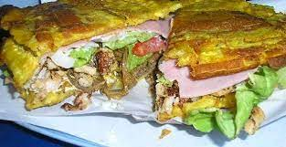
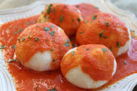
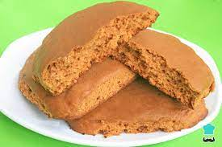

Gastronomía

El estado Zulia posee una mezcla cultural heredada de los europeos e indígenas que ocuparon y ocupan estas tierras, de la misma manera dicha mezcla es observada también en los diferentes platos autóctonos de la región, entre ellos tenemos: Chivo en coco, Cazuela marinera, Mojito en coco, hicaco, Escabeche costeño, Huevos chimbos, Arroz con palomitas, Bollos pelones, Plátano lacustre, Mandocas, Dulce de limonzón, el pabellón criollo, los pastelitos, las arepas, las cachapas, Dulce de paledonia y Patacón, siendo este último, emblemático de la zona.
Salado

Entre los más destacados que se encuentran en el estado Zulia son:
• El Chivo en Coco: Plato Elaborado con Chivo, Coco y Especies.
• El Mojito en coco: Plato Seco que Contiene Pescado Coco y Aliños.
• El Patacón: Plátano, Mantequilla y Queso o plátanos fritos en tajadas rellenos de carne, pollo, vegetales queso y salsa y a veces se puede hacer con topocho u otro tipo de plátano más dulce.
• Tequeños: Los tequeños son los pásapalos venezolanos más famosos y queridos, son preparados con palitos de queso forrados en masa y fritos al momento de comerlos.
• Pastelito: En otros países llamado también empanada, es un alimento preparado compuesto por una fina masa de pan y levadura, masa quebrada o de hojaldre, rellena de cualquier alimento salado o dulces.
• Bollos pelones: Se hacen con harina de maíz, guiso de carne o gallina y salsa de tomates.
Entre otros tales como, Cazuela marinera, pabellón criollo, arepas, cachapas.
Dulces

• Huevos Chimbos: Huevos chimbos es un dulce en almíbar, que consiste en unas masitas esponjosas hechas con amarillo de huevo batido.
• Mandoca: hecha de harina de maíz, papelón y queso y se puede echar un plátano muy maduro.
• Dulce de limonsón: postre de limón grande en almíbar.
• Dulce de paledonia: popularmente llamado catalina. También se puede saborear en otras regiones de Importancia.